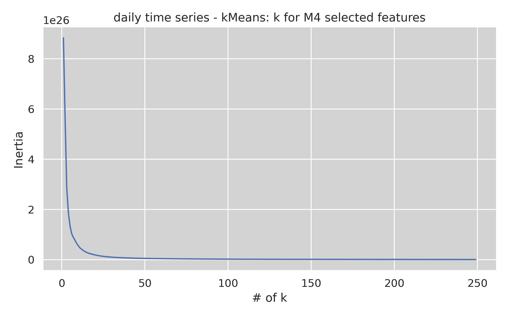
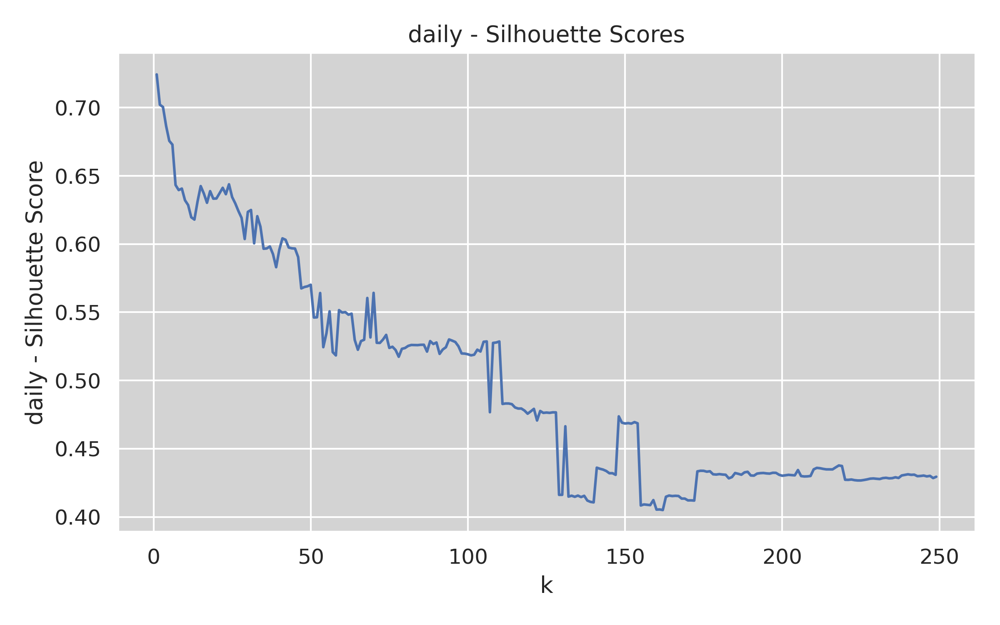
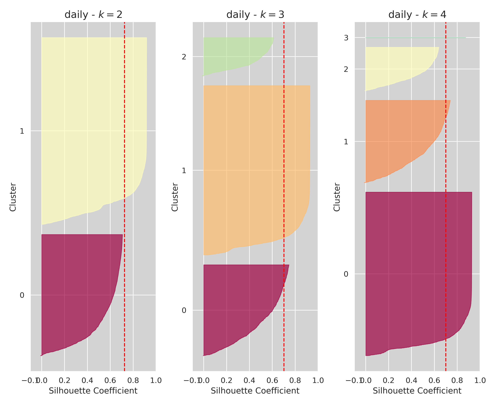
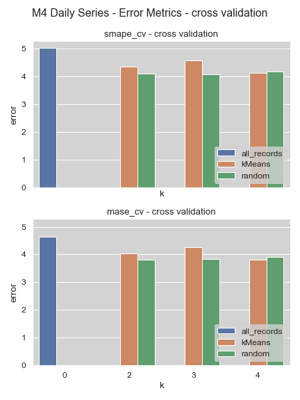
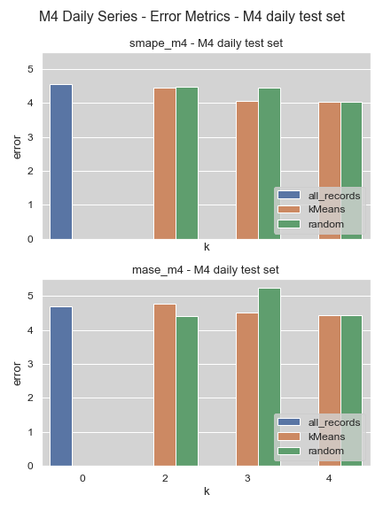

Philipp Beer
Graduate Program Data Science, UNIC
COMP-501DL Research
Prof. Spyros Makridakis & Prof. Ioannis Katakis
verify whether clustering time series can help improve the forecasting accuracy of machine learning methods and whether it can help get a better estimate of the error using cross-validation
goal: minimize within cluster sum-of-squares \[ \sum_{i=0}^n \min_{\mu_j \in C}(\lvert \lvert x_i - \mu_j \rvert \rvert^2) \]

\[ s(i) = \frac{b(i) - a(i)}{{\max\{a(i),b(i)\}}} \]


\[ SMAPE = \frac{100}{n} \sum_{t=1}^{n} \frac{F_t - Y_t}{(\lvert F_t \rvert + \lvert Y_t \rvert)/2} \] \[ MASE = mean \left( \frac{\lvert e_j \rvert}{\frac{1}{T-1} \sum_{t=2}^{T} \lvert Y_t - Y_{t-1} \rvert} \right) \]

